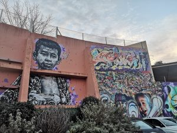
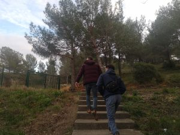
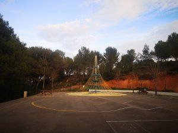
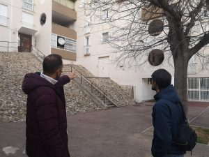
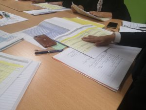

10h – Arrivée à l’Hôtel de Ville
10h – Arrivée à l’Hôtel de VilleLe rendez-vous est pris avec Sébastien, le chef du Service Développement des quartiers, intégré à la direction Habitat Démocratie Participative. On fait le tour de l’équipe : les chargé.es de développement social urbain (CDSU), autant d’agent.es d’écoute et de proximité, un secrétariat et une personne chargée de la communication. Ici, chaque quartier de la ville a son CDSU, et parmi tous les quartiers martégaux, trois sont en politique de la ville (Canto Perdrix, Mas de Pouane et Notre Dame des Marins), et deux en veille active (Paradis-Saint-Roch et Boudème). Les CDSU qui en ont la charge ont alors la double casquette développement local et politique de la ville.
Pause ! Un petit retour quelques années en arrière s’impose pour expliquer ce fort investissement politique communal dans les quartiers. Le service est né dans les années 80, avec l’ambition de remettre les quartiers au niveau de la ville, le tout sur un air de démocratie participative, avec la création de conseils de quartier en 1983 (16 au total sur la ville) : « On n’a pas attendu la politique de la ville pour délocaliser l’animation du droit commun dans les quartiers ». On nous raconte que la municipalité a depuis longtemps à cœur de favoriser l’accès au service public pour les habitant.es, et que quasiment tout est en régie (la cantine très peu chère, le conservatoire gratuit, les colonies de vacances financièrement accessibles pour toutes et tous …) ; le chaudron d’or au pied de l’arc-en-ciel se trouverait-il à Martigues ? Peut-être, car fun fact, sur le territoire se trouve le 1er pôle pétrochimique d’Europe, générant jusqu’en 2010 une importante taxe professionnelle réinvestie dans le service public.
Mais revenons-en à nos moutons…
Deux chargé.es de développement social urbain s’affairent au prototypage d’un « portrait de quartier » permettant aux élu.es de se mettre à jour sur les quartiers, avec ce qu’il faut de données essentielles et de photos pour les appréhender en un coup d’œil. On discute d’IDEE (pour Innovation, Durable, Égalité, Ensemble), qui sont en quelque sorte les points cardinaux de l’action municipale, et qui ont surtout vocation à ré-imaginer l’intervention des différents services, plus en transversalité, et à travers lesquels le service Développement des quartiers peut faire valoir sa connaissance précise du territoire et son savoir-faire de l’action publique expérimentale.
Au détour de la conversation, on est heureux de les entendre sur les choses qui les ont marquées dans leur vie professionnelle, « On avait fait 6 semaines d’animation pour les enfants dans le quartier, sur des espaces publics délaissés, ça a bien marché et les gamins venaient fêter leurs anniversaires ici, avec tout le quartier ! C’est un moment qui m’avait particulièrement ému » ; avec ce qu’il faut de recul et réflexivité : « Avant, on voulait que les quartiers aillent en mairie. On s’est dit ça pendant des années, car l’adage c’était de ne pas ghettoïser les habitant.es, mais de les sortir du quartier. Maintenant on va à rebours de ce discours, on est sur du sur-mesure ».
A Martigues, le contrat de ville est un dispositif … parmi bien d’autres ! Et parmi eux, il y a la Convention de Gestion Urbaine de Proximité, une convention-cadre entre des partenaires (au minimum entre l’État, les collectivités territoriales et les bailleurs sociaux) qui pose des objectifs communs dans les quartiers. C’est le pendant du Contrat pour le renouvellement urbain, chaque quartier politique de la ville et de veille active représente un « avenant » à la convention, qui court sur trois ans. Un sacré micmac !
A l’heure des crises multiples, où s’annoncent notamment des coupes budgétaires et où chaque service sera impacté, l’action publique est contrainte à s’adapter. Demain, c’est la sobriété qui doit s’imposer. Sébastien en a bien conscience : « C’est le plus gros défi qu’on aura à relever. Notre rôle sera d’être au plus près des habitant.e.s pour leur expliquer, pour accompagner les changements » ; « la période budgétaire va nécessiter de s’articuler encore plus entre services et avec les partenaires pour optimiser l’action … Il faut mettre en musique tout ça ».
Véritable pivots de la politique de la ville, les CDSU sont au four et au moulin pour tirer parti au mieux des différents dispositifs et faire le lien entre les partenaires : « des fois il se passe un truc sur un quartier, on m’appelle, ça ne passe pas forcément sur les travaux de proximité, mais du coup je vais aller dealer avec le bailleur, et voir s’il n’y a pas même une petite somme qui peut être allouée … On est vraiment les chef.fes d’orchestre, entre les attentes, les budgets, les différents partenaires ». Chef.fes d’orchestre, chevilles ouvrières, dealer.euses de solutions, jongleur.euses de convention-cadres … Enfin, vous avez compris l’idée !
En tout cas au menu de la programmation 2023, 129 projets déposés pour Martigues. Ce n’est pas rien. Comment garantir de la qualité de chaque projet quand ils sont si nombreux ? L’ingénierie est-elle suffisante pour orchestrer ces actions ? Y a-t-il une attention assez grande sur les bilans et comment mesurer ce qui est vraiment produit sur le territoire ? Au-delà de l’effet catalogue, le nombre de projets est-il corrélé à une dynamique dans les quartiers, ou bien un rencentrage serait-il être souhaitable ?
Sébastien en profite pour nous faire visiter le quartier, où se mélangent fresques artistiques, espaces de jeux, espaces verts et résidences rénovées récemment.


Il nous présente « la conciergerie », un chantier d’insertion où les jeunes aident les résident.es à monter leurs courses, ou pour des petits travaux/aides au quotidien.
En repartant direction le conseil citoyen de Notre Dame des Marins, on aperçoit deux jeunes qui traînent autour d’un banc. « Qu’est-ce qu’il fait là lui … » dit Sébastien en gardant un œil sur les deux jeunes hommes dans le rétroviseur. On était déjà un peu en retard, mais en un coup de volant on fait demi-tour : « ce sera pas long ». En arrivant à leur hauteur, il baisse la fenêtre « Dis donc ça fait longtemps que je t’ai pas vu, comment tu vas mon grand ? », ils échangent rapidement, et en repartant Sébastien glisse un « surtout, prend bien soin de toi ». Si on vous raconte cette scène qui pourrait être tout à fait anecdotique, c’est qu’elle reflète parfaitement l’investissement de l’équipe dans les quartiers, leur connaissance des quartiers, de leurs habitant.es. « Je le connais de quand j’étais CDSU ce môme, il est pas méchant … Mais il a pas de cadre, c’est tout …. Il faut sortir les jeunes du quartier », « J’ai pas à faire ça, mais je le fais… C’est du 100% Martigues ! ».
Alors que le soleil se couche sur l’Etang de Berre et dévoile un ciel d’un rose éclatant, direction la maison de quartier de Notre Dame des Marins pour le fameux conseil citoyen. On se retrouve autour d’une grande table, quelques habitant.es sont là (la plupart ont 60/65 ans … depuis quelques années déjà et n’en sont pas à leur premier Conseil ), quelques structures déposant des projets, la directrice du centre social, la Ville et la Métropole, et une représentante du bailleur 13 Habitat.
Mais comment ça se passe au juste ? Les participant.es ont devant les yeux un tableur excel de plusieurs pages écrit en police 9 (on caricature à peine) listant une série de projets, leurs objectifs, les financements demandés … D’un côté, les projets, possiblement financés par le bailleur social grâce à l’abattement de Taxe Foncière sur les Propriétés Bâties (une exonération de taxe fléchée vers le financement d’actions de cohésion sociale à destination des résident.es) ; et de l’autre, les projets déposés pour la programmation annuelle du contrat de ville. La présentation succincte des projets s’enchaîne, certains sont des reconductions, d’autres des nouveautés. L’avis des habitant.es est attendu (favorable, défavorable, réservé). Sans trop de surprise, les avis positifs s’enchaînent, oscillant entre de timides « hmmm …oui oui », ou des « Ah oui ! » plus francs. On s’interroge : sont-ils en posture de refuser une action qui se déroulerait au pas de leur porte ? Tout projet a forcément un intérêt pour dynamiser le quartier, peut être utile aux habitant.es, ne serait-ce qu’à quelques-un.e.s…
Une instance en place certes, mais qui pourrait être réenchantée … Les conseils citoyens sont assez récents, gravés dans le marbre par la loi Lamy de 2014 pour favoriser l’intervention citoyenne dans la politique de la ville. Pour la Ville de Martigues qui a fêté les 30 ans de ses conseils de quartiers en 2013, c’est davantage la crainte de redondance avec ce qui existait déjà qui a point, tout en reconnaissant que les pratiques existantes ont grandement facilité leur instauration. Les CDSU de la ville se sont donnés l’objectif de les rencontrer tous les deux mois, pour assurer un lien régulier et non une sollicitation opportuniste. Pour ce qui est de la programmation annuelle (et qui nous occupe présentement pour cette réunion), le conseil citoyen émet un avis consultatif auquel se référeront parfois les membres du comité technique : des fois c’est suivi, des fois pas. « C’est mon rôle d’expliquer ce qui s’est joué dans les comités techniques et financiers, qu’ils sachent pourquoi telle ou telle décision a été prise ». « Au fil des années, les membres du conseil citoyen ont acquis une forme d’expertise, voire d’exigence pour certains projets, des fois ils s’indignent des montants demandés aussi ! », « ça leur permet également de mieux cerner comment ça se passe côté service de la ville, les instances de décisions, etc… ».
« Vous – le conseil citoyen – vous êtes le meilleur vecteur de com’ pour les actions dans le quartier ». En filigrane, on devine que l’enjeu serait de faire passer le conseil citoyen d’instance « caution » de la participation des habitant.es à un véritable acteur de l’animation du contrat de ville, et notamment de la programmation annuelle. La gouvernance de ces conseils citoyens est-elle optimale ? Comment permettre aux habitant.es de s’en saisir pleinement, et en faire une force de proposition pour le quartier ?
Few hours later – Il est temps pour nous de regagner nos pénates ! Une journée bien remplie se termine, venant donner de la substance au contrat. … Mais notre immersion ne s’arrête pas là, rendez-vous au prochain épisode pour une matinée au COTECH de Salon de Provence.